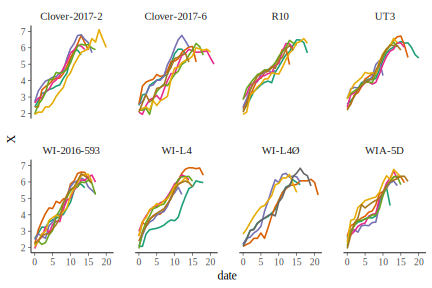
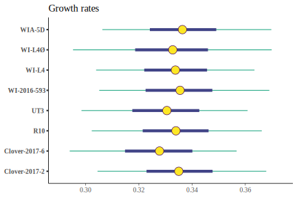
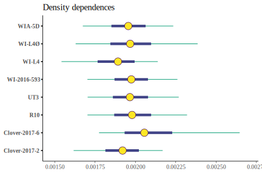

vignettes/02-estimate_pars.Rmd
02-estimate_pars.RmdThis file will eventually contain the analyses to estimate aphid population-growth parameters. It is not yet finished, and much of the code below is not run during the making of this document.
See ?impute for information on imputing missing data.
growth <-
load_data(impute_fxn = impute) %>%
mutate(line = paste(line)) %>%
bind_rows(clonewars:::load_pz_data(impute_fxn = impute)) %>%
mutate_at(vars(line, rep), funs(factor)) %>%
# Now filter out early part of each time series, before N > 6
# N <= 6 is when the stochasticity associated with only starting with 2 adults
# appears to be strongest
group_by(line, rep) %>%
filter(1:n() >= which(N > 6)[1]) %>%
mutate(date = date - min(date)) %>%
ungroup()This is how many reps I have of each line:
| line | n |
|---|---|
| Clover-2017-2 | 6 |
| Clover-2017-6 | 7 |
| R10 | 7 |
| UT3 | 7 |
| WI-2016-593 | 7 |
| WI-L4 | 7 |
| WI-L4Ø | 6 |
| WIA-5D | 7 |
growth %>%
ggplot(aes(date, X, color = factor(rep))) +
geom_line(size = 0.75) +
# geom_point() +
facet_wrap(~ line, nrow = 2) +
scale_color_brewer(palette = "Dark2", guide = FALSE) +
NULL
#> Warning in RColorBrewer::brewer.pal(n, pal): n too large, allowed maximum for palette Dark2 is 8
#> Returning the palette you asked for with that many colors
#> Warning: Removed 16 rows containing missing values (geom_path).
# http://mc-stan.org/bayesplot/articles/visual-mcmc-diagnostics.html
posterior <- as.array(stan_fit)
mcmc_intervals(posterior, pars = sprintf("R[%i]", 1:8)) +
scale_y_discrete(labels = growth$line %>% levels()) +
ggtitle("Growth rates")
mcmc_intervals(posterior, pars = sprintf("A[%i]", 1:8)) +
scale_y_discrete(labels = growth$line %>% levels()) +
ggtitle("Density dependences")
This code is looking at model output. I’m not including it yet in this vignette because it’s not ready.
apply(rstan::extract(stan_fit, "R", permuted = FALSE), 3, mean)
apply(rstan::extract(stan_fit, "A", permuted = FALSE), 3, mean)
apply(rstan::extract(stan_fit, "s_epsilon", permuted = FALSE), 3, mean)
apply(rstan::extract(stan_fit, "s_epsilon", permuted = FALSE), 3, quantile,
probs = c(0.025, 0.975))
print(stan_fit, digits = 6, pars = c("R", "A", "s_epsilon"), probs = c())
# parameters of interest
pars_interest <- c(sprintf("A[%i]", 1:8), sprintf("R[%i]", 1:8),
paste0(rep(c("", "s_"),each=2), c("theta", "phi")),
"hats_phi", "s_epsilon")
# Rhats
rhats <- rhat(stan_fit, pars = pars_interest)
mcmc_rhat(rhats) + yaxis_text(hjust = 1)
# Neff / N
neff_ratios <- neff_ratio(stan_fit, pars = pars_interest)
mcmc_neff(neff_ratios, size = 2) + yaxis_text(hjust = 1)
# Autocorrelation
mcmc_acf(posterior, pars = pars_interest[1:8], lags = 10)
mcmc_acf(posterior, pars = pars_interest[9:16], lags = 10)
mcmc_acf(posterior, pars = pars_interest[17:length(pars_interest)], lags = 10)
lp <- log_posterior(stan_fit)
np <- nuts_params(stan_fit)
mcmc_trace(posterior, pars = pars_interest[1:8], np = np)
mcmc_trace(posterior, pars = pars_interest[9:16], np = np)
mcmc_trace(posterior, pars = pars_interest[17:length(pars_interest)], np = np)
mcmc_nuts_divergence(np, lp)
mcmc_parcoord(posterior, np = np)
mcmc_scatter(
posterior,
pars = c("s_epsilon", "R[6]"),
transform = list(`R[6]` = "log"),
np = np
)
growth %>%
group_by(line) %>%
summarize(n = length(unique(rep))) %>%
mutate(line = as.integer(line)) %>%
as.data.frame()
pred_df <- make_pred_df(stan_fit, growth)
pred_df %>%
# filter(rep == 1) %>%
# filter(rep == 4, line == "Clover-2017-2") %>%
ggplot(aes(date, X)) +
geom_ribbon(aes(ymin = X_lower, ymax = X_upper),
fill = "gray70", alpha = 0.5) +
geom_line(color = "firebrick", alpha = 0.5) +
geom_point(shape = 1, color = "firebrick", alpha = 0.5) +
geom_line(aes(y = X_pred), color = "dodgerblue3", size = 0.5) +
# facet_wrap(~ rep + line, nrow = 2) +
facet_wrap(~ rep + line, nrow = 4) +
NULL